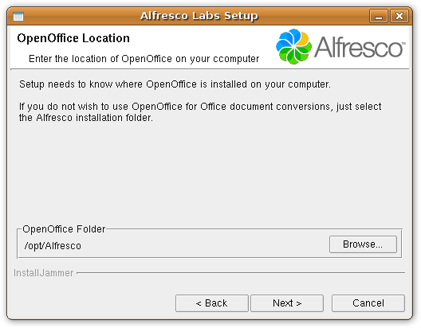
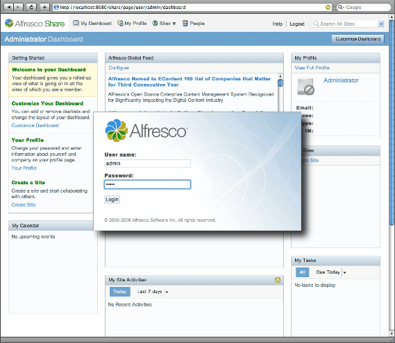

For this recipe we will be using Alfresco Labs 3c, the community supported release.
You can use the full blown installer or simply download the WAR file only version. We will be using the former method, but you could choose the latter and just deploy the application in your favorite application server. For this you could refer to the Glassfish recipe and the rest of this document would be of no more concern to you.
Before we proceed with the installation of Alfresco Lab 3c on Linux, you must know that it uses JDK 1.5+, MySQL and Tomcat as application server.
We will be installing the package and then setting up Cherokee as a reverse proxy to access this Enterprse Content Managment solution.
Phase one: Alfresco
Once you've downloaded the full installer, the process is as simple as running it and follow the easy step by step assistant.
If you choose to run it as root, it will be installed in /opt/Alfresco by default and will be available system-wide. If not, your home directory will be chosen.
The process is fairly straight forward.

When you are asked for an OpenOffice location, you can select the Alfresco directory if you don'w want to use it for Office document conversions. If you can't seem to find a path that lets the installer proceed, it could be that the installer is trying to look for the file soffice.exe. There is information about this problem in their wiki, but you could try copying or making a symbolic link to /usr/bin/soffice while the installer gets fixed. We will simply be ignoring this step.

This should do for now. Now you have to launch Alfresco.
# /opt/Alfresco/alfresco.sh start
If you experience problems or notice a wrong JRE path, you should edit the script and modify the JRE_HOME variable to whatever Java version you have on your system.
For instance, it could show:
Using JRE_HOME: /usr
By simply looking to your files you could find out the correct version you have in your system.
# ls -l /usr/lib/jvm total 8 lrwxrwxrwx 1 root root 14 2008-11-12 11:13 default-java -> java-6-openjdk drwxr-xr-x 7 root root 4096 2008-11-12 11:13 java-6-openjdk lrwxrwxrwx 1 root root 19 2008-11-19 01:25 java-6-sun -> java-6-sun-1.6.0.10 drwxr-xr-x 6 root root 4096 2008-11-19 01:25 java-6-sun-1.6.0.10
In this case, we would be setting JRE_HOME to /usr/lib/jvm/java-6-sun-1.6.0.10
After giving the script some seconds to launch the application server, you can now access Alfresco by visiting http://localhost:8080/share
| Field | Value |
|---|---|
| user | admin |
| password | admin |

Figure: Accessing Alfresco
Figure: Accessing Alfresco
Phase two: Cherokee
Now to set up Cherokee as reverse proxy. You can either create a new virtual server with a matching rule (be it default or anything else) if you are sharing the proxy machine, or dedicate another machine to the Proxy Handler. This will be our choice, since typically you will be wanting to get the best possible performance, the Java application server is heavy by definition, and you could be using the proxy machine also to serve other contents. We are only going to set Cherokee's HTTP reverse proxy handler to hit the server running Alfresco at port 8080.
Launch Cherokee-Admin on your proxy machine, create a rule that matches the desired path on your web server hierarchy -/share for instance- in your virtual server of choice, and define the HTTP reverse proxy handler from within the Handler tab.
Remeber to configure an URL rewriting rule in the handler's configuration. Alfresco's application server doesn't provide content directly in the document root, so we'll have to add the required subnode.
| Regular Expression | Substitution |
|---|---|
| /share/$1 |
You will need to assign it an information source you define for the server running Alfresco. We will assume the IP is 192.168.1.100 in your firewalled local network, and your reverse proxy is accessible as http://example.com/
This information source is to be defined as external sources, like the following example:
| Type | Nick | Connection |
|---|---|---|
| Remote host | liferay | 192.168.1.100:8080 |
Refer to the HTTP reverse proxy documentation if you need any further help with this.
Once you launch Cherokee and access http://example.com/share, you should be presented with the login screen from before, since you will be receiving whatever is at http://192.168.1.100:8080/share.